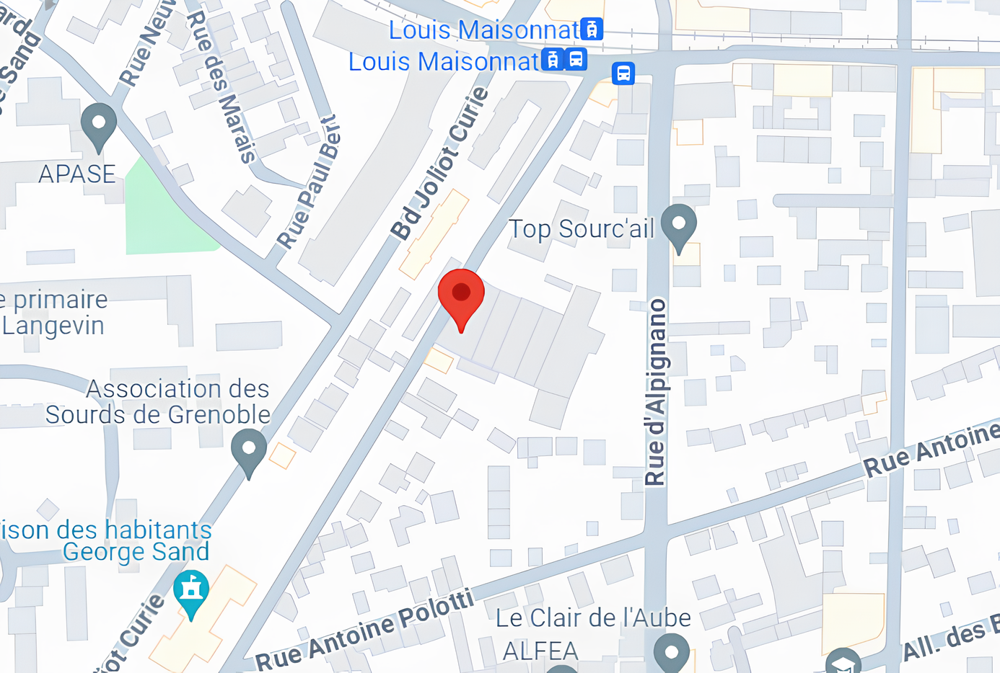
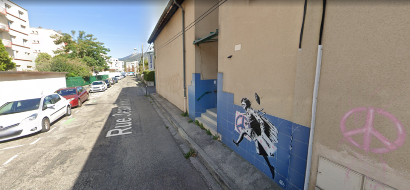
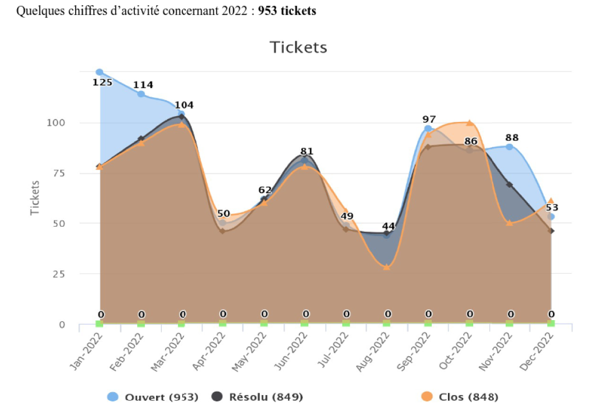
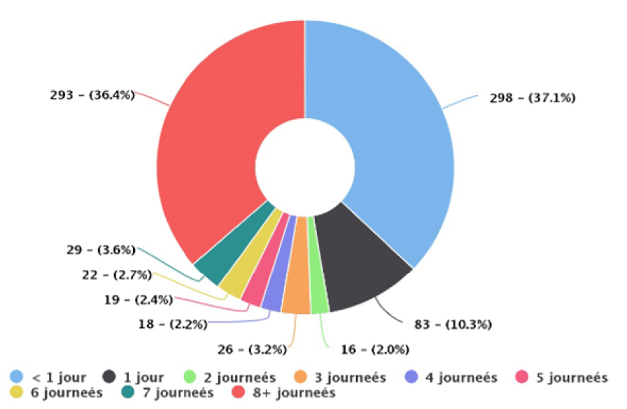

Stage de première année à la DSI (Direction des Systèmes d'Information) de la Mairie de
Fontaine
29 Mai - 30 Juin 2023
Localisation
15 Rue Jean Bocq, 38600 Fontaine


Présentation
La DSI de Fontaine étant rattaché à la Mairie, n'est pas une réelle entreprise et n'a donc pas
de chiffre d'affaires.
Celle-ci se doit de maintenir l'équipement informatique de la ville à jour et en bon état afin que les
événements se déroulent comme il le faut,
que les enfants continuent d'apprendre dans les meilleures conditions possibles et que les décisions prises durant
les conseils municipaux se passent convenablement.
Depuis 2014, le passage aux logiciels libres se fait progressivement, d'abord sur la base du volontariat, et
depuis peu se fait via le principe de "Linux par défaut, Windows par exception".
Les nouveaux postes de travail dans les écoles et autres bâtiments dont est chargé la DSI de Fontaine se font donc
sous Linux et avec des logiciels libres tels que la LibreOffice plutôt que Microsoft Office.
Fonctionnement
Des demandes effectués par les différents "clients" de la DSI de Fontaine, tels que la Source,
les écoles, la Mairie, etc..
Une demande par ticket, ou directement par appel s'il s'agit d'une urgence, est alors effectuée à la DSI, qui se
charge de régler la demande le plus rapidement possible.

